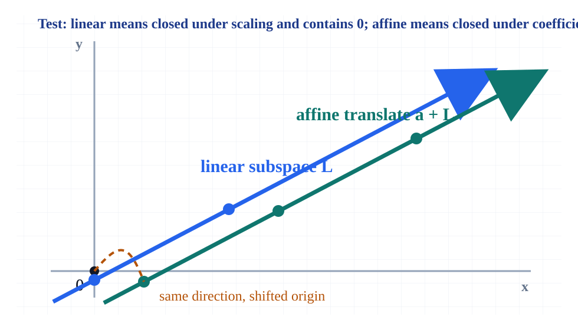
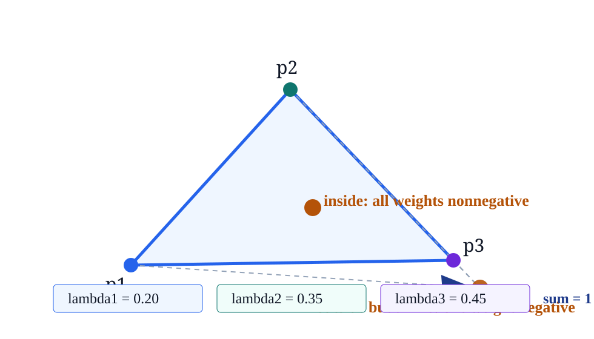
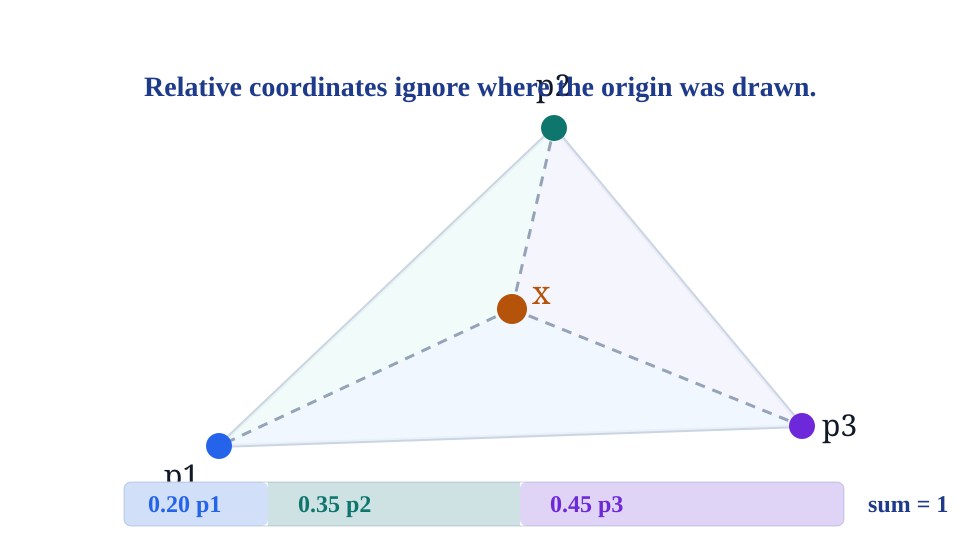
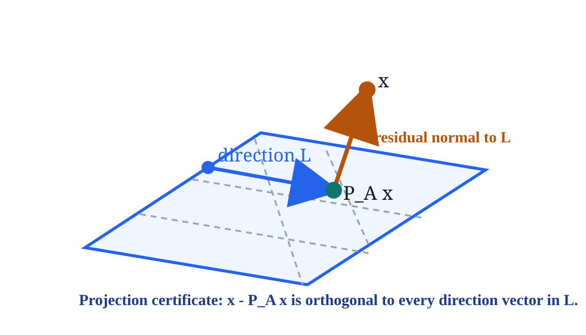

A lecture deck for making affine geometry computational: affine combinations, hulls, flats, dimension, independence, and certificates for points in or out of a flat.
Replace pictures of flats with testable data: coefficients sum to one, ranks give dimensions, residuals certify membership, and projection residuals are orthogonal to the direction space.
Notebook: Convex-Analysis/part-01-basic-concepts/section-01-affine-sets/01-affine-sets.ipynb

\(L\) is linear when \(u,v \in L\) implies \(\alpha u + \beta v \in L\) for all scalars \(\alpha,\beta\). Taking \(\alpha=\beta=0\) forces \(0 \in L\).
\(A\) is affine when \(x,y \in A\) implies \((1-t)x + ty \in A\) for every scalar \(t\). Equivalently, \(A=a+L\).
If a translated line misses the origin, it cannot be linear; it can still be affine because all secants have the same direction space.
\(x = \lambda_1 p_1 + \cdots + \lambda_m p_m,\quad \lambda_1+\cdots+\lambda_m = 1.\)
Translate every point by \(b\). The combination moves by \((\sum_i \lambda_i)b\). It follows the translated configuration exactly when the sum is one.
Convex combinations add the extra requirement \(\lambda_i \ge 0\). Affine combinations may have negative weights.

\(a + t u,\ t \in \mathbb{R}\)
\(a + \operatorname{span}\{u_1,\ldots,u_k\}\)
\(H=\{x : n^\top x = c\}\)
For \(S=\{p_0,\ldots,p_k\}\), form \(D=[p_1-p_0\ \cdots\ p_k-p_0]\). Then
\(\operatorname{aff} S = p_0 + \operatorname{range}(D)\).
Slide-local ledger: rank \(2\), affine dimension \(2\), \(p_3\) lies in the same hull.
Given \(A=p_0+\operatorname{range}(D)\), solve
\(D\mu = x-p_0.\)
If the residual is zero, \(x=p_0+D\mu\) lies in \(A\).
If \(\mu=(\mu_1,\ldots,\mu_k)\), then \(x=(1-\sum\mu_i)p_0+\sum\mu_i p_i\), and the coefficients automatically sum to one.
A normal equation \(n^\top(x-p_0)\ne0\) proves the point is not on the flat.
| Candidate | Residual | Decision |
|---|---|---|
| \((2.6,1.6,2.2)\) | \(0.0\) | in \(A\) |
| \((2.6,1.6,2.7)\) | \(0.421637\) | outside \(A\) |
Asset: affine-membership-certificate.json records coefficients \([0.2,0.4,0.4]\), coefficient sum \(1.0\), and outsider residual.
\(p_0,\ldots,p_k\) are affinely independent iff \(p_1-p_0,\ldots,p_k-p_0\) are linearly independent.
| Set | rank of differences | expected | status |
|---|---|---|---|
| \(p_0,p_1,p_2\) | 2 | 2 | independent |
| \(p_0,p_1,p_2,p_3\) | 2 | 3 | dependent |
An affine dependence is a nonzero vector \(\lambda\) with \(\sum_i\lambda_i=0\) and \(\sum_i\lambda_i p_i=0\).
\(\dim(\operatorname{aff} S)=\operatorname{rank}[p_1-p_0\ \cdots\ p_k-p_0].\)
The dimension counts independent directions after the arbitrary base point has been removed.
| Object | Matrix signal | Affine dimension |
|---|---|---|
| single point | empty difference matrix | 0 |
| translated line | one independent column | 1 |
| section plane | rank \(2\) | 2 |
| full \(\mathbb{R}^n\) | rank \(n\) | \(n\) |

\(x=0.20p_1+0.35p_2+0.45p_3,\quad \sum\lambda_i=1.\)
The weights describe the point relative to the anchors, so translating every \(p_i\) translates \(x\) by the same amount.
All weights nonnegative places \(x\) in the convex hull. Allowing negative weights gives the whole affine hull.
The same coefficient vector can be read as a reconstruction, a membership certificate, or an interpolation rule.
If \(A_i=\{x: B_i x=d_i\}\) are affine, then
\(\bigcap_i A_i=\{x: Bx=d\}\)
after stacking the equations, provided the system is consistent.
For a consistent system in \(\mathbb{R}^n\), the direction space is \(\ker B\), so the dimension is \(n-\operatorname{rank}B\).
Parallel inconsistent flats have empty intersection; the empty set is usually treated separately from affine sets.

\(\min_{y\in a+L}\|x-y\|^2.\)
The minimizer \(P_Ax\) satisfies \(x-P_Ax \perp L\).
| Check | Value |
|---|---|
| \((x-P_Ax)^\top u\) | 0.0 |
| \((x-P_Ax)^\top v\) | 0.0 |
| projection point | \((2.6444,1.8222,2.3444)\) |
The same normal residual used to reject membership becomes the vector that points from the projection back to the original point.
Convexity checks \((1-t)x+ty\) only for \(0\le t\le1\). Affineness checks the same expression for every real \(t\).
A filled triangle contains all segments between its points, so averages stay inside.
Extend a segment beyond an endpoint with \(t>1\) or \(t<0\); the result can leave the triangle.
This distinction is why convex hull and affine hull are different operations.
Choose \(p_0\). Replace points by differences \(p_i-p_0\).
Compute \(\operatorname{rank}D\). This is the affine dimension of the hull.
Solve \(D\mu=x-p_0\). Record the residual and coefficients.
For projection, verify the residual is perpendicular to every direction column.
| Check | Stored evidence | Status |
|---|---|---|
| coefficients sum to one | \(1.0\) | passed |
| rank equals dimension | \(2=2\) | passed |
| member residual | \(0.0\) | passed |
| outsider residual | \(0.421637\) | passed |
| projection orthogonality | two zero dot products | passed |
Assets: affine-hull-rank-ledger.json, affine-membership-certificate.json, slide-checks.json.
Given points \(p_0,\ldots,p_k\) and a candidate \(x\), produce either affine coefficients summing to one or a residual that proves \(x\notin\operatorname{aff}\{p_i\}\).
Convex sets add inequalities and nonnegative weights to this affine backbone.